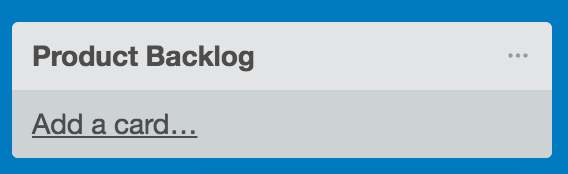
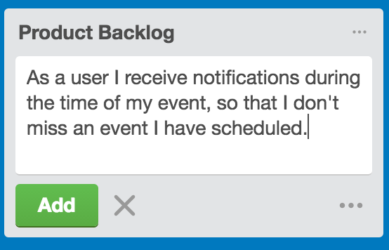
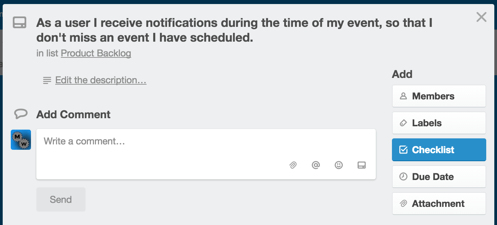
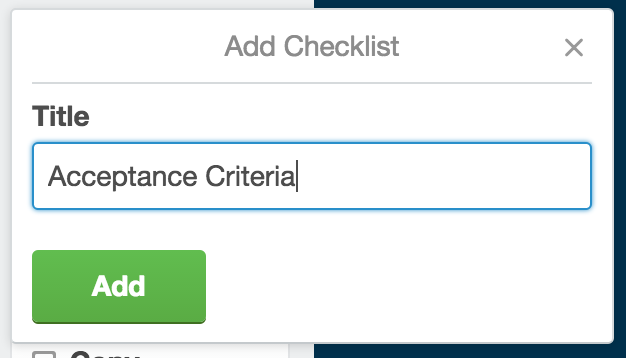
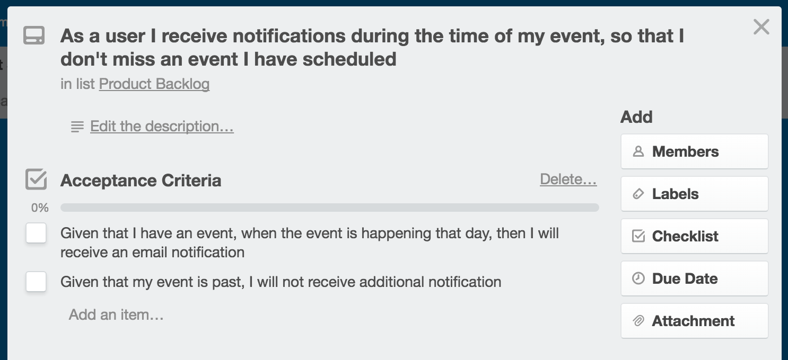
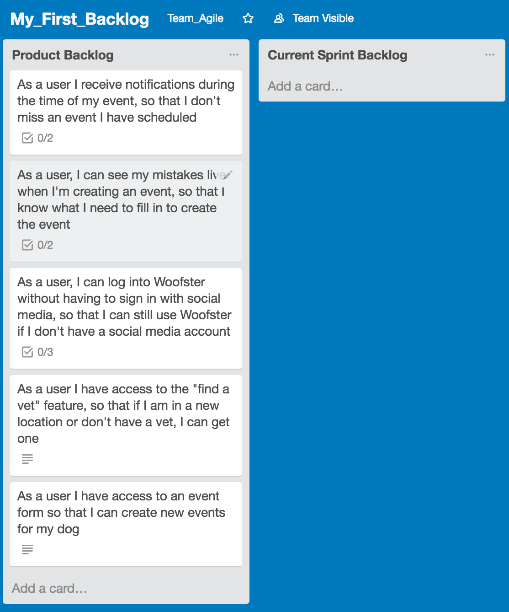

Creating a Product Backlog
Purpose
This tutorial walks through adding user stories to Product Backlog.
What is a Product Backlog
It is a list of features written as user stories. Each user story is written to describe the type of user, what is needed, and why. These user stories are organized from high to low priority by the product owner.
Step-By-Step Instructions
Creating a User Story for Product Backlog
- Under the Product Backlog list, click Add a card 
- Enter your user story. Note: Make sure the user story says who, what, and why.
- Click Add 
Adding Acceptance Criteria
-
Reminder: Acceptance Criteria is a set of tasks that refine a user story. The scrum team asks questions with the product owner to confirm what defines each story as being done.
- Click once on the user story created
- In the pop-up click Checklist 
- Enter the title as Acceptance Criteria
- Click Add 
- Under Acceptance Criteria click Add an item and add your acceptance criteria for the user story. 
- When you finished your Product Backlog will look like this 